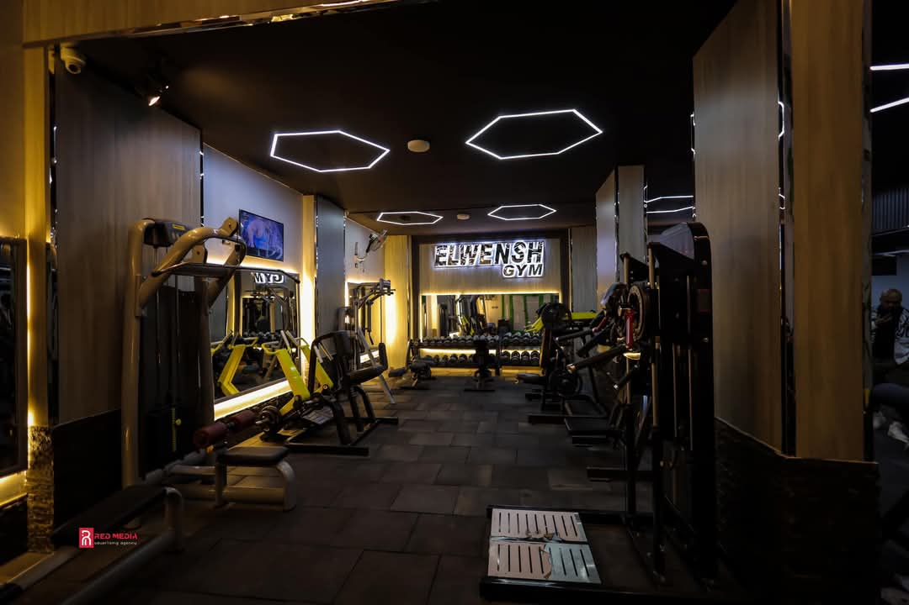

Football is my favorite hobby. I love playing football with my friends. It is a fun game that makes me feel happy and energetic. I enjoy running on the field, kicking the ball, and scoring goals. Watching football matches is exciting, and I always cheer for my favorite team. Football helps me stay active and teaches me the importance of teamwork.

Reading is one of my favorite hobbies. I love to read because it takes me to new worlds and helps me learn new things. Every day, I spend some time with a book or an article. Reading relaxes me and improves my vocabulary. It also inspires me to think and explore different ideas. I enjoy all kinds of books, from stories to facts. Reading is a fun and peaceful way to spend my free time.
Going to the gym is my favorite hobby. I enjoy working out and staying fit. Every day, I exercise by lifting weights and running on the treadmill. It makes me feel strong and happy. The gym helps me relieve stress and maintain a healthy lifestyle. I also like learning new exercises and challenging myself. Working out is fun and makes me feel confident.